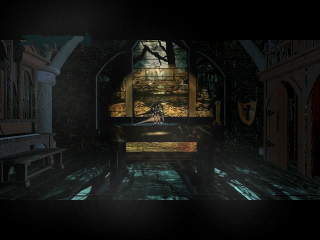

"My god, the pain!"
Graeme Devine went to Id Software.
This is the new company of Rob Landeros and David Wheeler. Aftermath.
This is an adventure game encyclopedia called the Jave, they were kind enough to add my site to their
links, so I return the favour. If love adventure games, this really is the place to go to.
This is an excellent fan site I found, I took the liberty to steal some stuff. Take a look, it's great.
We fans also have an official fanclub. Go see it right now!
Robert Stein III designed the 3d for the 11th hour, he has his own company now. Check it out for
some beautiful pictures and avi's.The company of Robert Stein III.
The man, the music. This page was also linked on my seventh guest page. It's the
official page of The Fat Man. (My seventh guest page is linked there!).
The man behind Stauf, go see this nice page from a seventh guest friend of mine.The official Robert Hirschboeck site.
Here you can find my seventh guest page.
Debra Ritz Mason, she played Martine Burden and directed the moviescenes in the seventh guest, has a online presence as well.
Check this page out if you want to learn more about her.
If you want to go to her official site, just follow this link.
Edward Knox (Larry Roher) is online too. Check him out here .
Buy the games online:
You can buy the 11th hour here at Cd Access.
Another option is Amazon, they sell both the games and the guides. Or
there is an auction that sells the game, or they give links to Amazon-linked online shops who do sell the game at that moment. Another option is to find the games on one of the many auction or tradesites on the net.
Buy the novel online:
There is a novel about the seventh guest. It is written by Matthew J. Costello (the original screenplay-writer) and Craig
Shaw Gardner. I read it and loved it, it really adds more to the game. You can buy this online at multiple sites. Amazon is present again. It costs 21,95 American dollars.
Buy the strategyguide online:
Amazon is probably your best shot. Just type 'The 11th hour'
in the search option on the openingspage and you will find it.
Buy the soundtrack online:
You guessed it, Amazon sells the cd '7/11' by the Fat Man. But you can also
buy it at his own site, The Fat Man.
Online documentation:
Want to read articles about Trilobyte, Graeme, Rob and David? This is the place to do it.
A long interview with Graeme Devine
A fantastic article about Trilobyte
A sad article about the closing of Trilobyte
 Mail me and say what you think about this site. If you have any problems, questions are anything else feel free to ask me as well.
Mail me and say what you think about this site. If you have any problems, questions are anything else feel free to ask me as well.